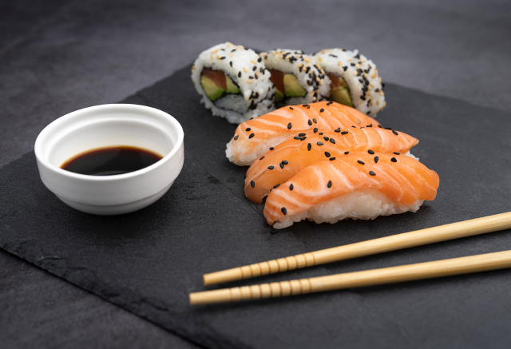
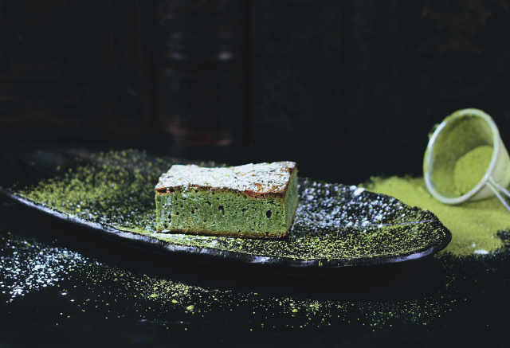

- Home
- Menu
- About us
- Contact us
Sushi Restaurant
the best place where you can eat sushi and enjoy the taste of the japanese food.
menu

we provide the best quality of suhsi by using fresh fish and high quality rice also the sauces are made in the restaurant by specialist
the noodles used in our dishes are homemade, also all the meat and vegetables used are fresh.

you can finish your journey by trying japanese dessert.